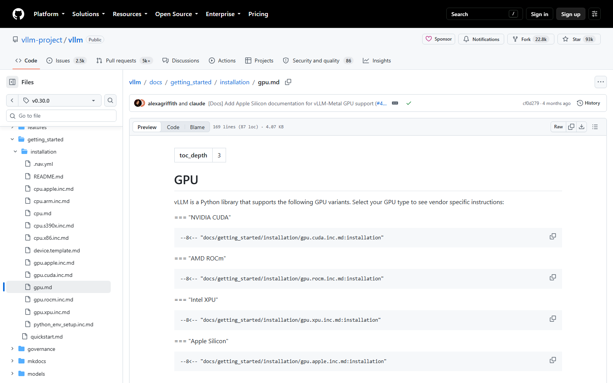
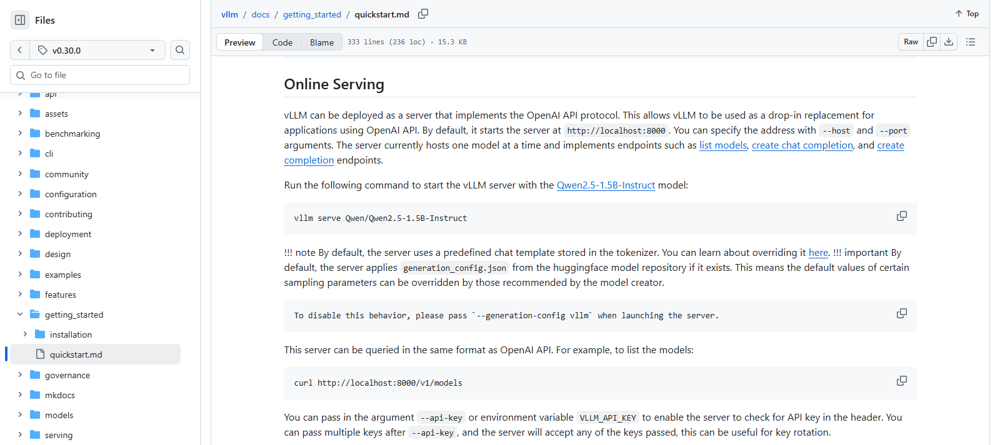
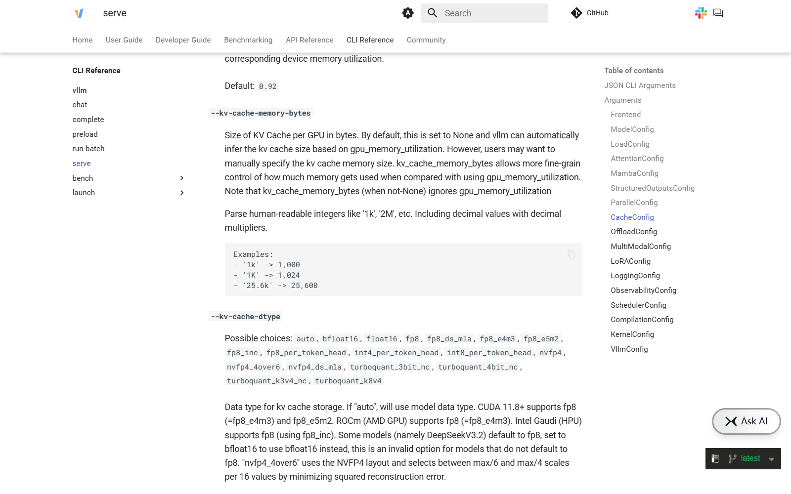

OSS PROJECT INTRO · VLLM 系列第 2 期：5 分钟跑起来
上一期我们认识了这位"显存精算师"，这期继续，把它请进你自己的 Linux 机器。目标很小也很硬：装上 vLLM，一条命令起一个 OpenAI 兼容服务，收到模型的第一句回答——然后顺手讲清三个最常用的启动参数：模型怎么指、上下文长度怎么控、显存水位怎么调。这三个参数是你与"显存精算师"谈判的筹码：它们决定一块卡被怎样瓜分、一条请求最长能吃多少缓存。本期全程对照官方 Quickstart 与 CLI 文档（基于 v0.30.0，2026-09-30 核对），命令逐字可抄。
上期的环境底线这里直接复用：Linux 原生（Windows 走 WSL）、Python 3.10～3.13、NVIDIA 显卡计算能力 7.5 及以上。开装之前，60 秒自检三条命令，确认你的机器"有资格"：
nvidia-smi # 有卡吗？驱动正常吗？显存多大？
python3 --version # 3.10 ~ 3.13 之间吗？
df -h ~ # 磁盘够吗？模型权重动辄几个 GBnvidia-smi 是你最常用的仪表盘：右上角能看到驱动版本与 CUDA 版本，下面是显存总量与实时占用——本期调参数时盯的就是这块数字。磁盘方面，本期的示例模型 Qwen2.5-1.5B 权重约 3 GB，换更大的模型按比例放大。没有 NVIDIA 卡？云厂商按小时租一张 T4 或 L4 是最省心的起步方式，全套流程不变。
来源注记——环境要求出自 docs.vllm.ai Installation → GPU 页（2026-09-30 核对）：Linux、Python 3.10–3.13、算力 7.5+（T4/RTX20xx/A100/L4/H100/B200 在官方清单）。
官方 Quickstart 推荐用 uv 管理环境——它快，而且能自动匹配本机 CUDA 与 PyTorch 轮子：
uv venv --python 3.12 --seed
source .venv/bin/activate
uv pip install vllm --torch-backend=auto三条命令逐字对照官方文档：建虚拟环境、激活、安装。--torch-backend=auto 是点睛之笔——uv 会探测本机驱动，自动挑选匹配的 PyTorch 与 CUDA 组合，免去"驱动与轮子对不上"的经典暗坑。习惯 pip 的话，pip install vllm 也可以：预编译轮子默认按 CUDA 12.9 构建，官方另提供 12.8 与 13.0 变体，Blackwell 新卡（B200/GB200）至少需要 CUDA 12.8。安装包约 2 GB 出头（含 PyTorch），慢的话挂代理或用国内镜像源。

来源注记——github.com/vllm-project/vllm 仓库 docs/getting_started/installation/gpu.md（v0.30.0 tag，2026-09-30 截图核对）：安装命令、CUDA 12.9 默认构建与 12.8/13.0 变体口径均出自该文档。
见证门面的时刻。vllm serve 后面直接跟模型名，回车：
vllm serve Qwen/Qwen2.5-1.5B-Instruct第一次运行会自动从 Hugging Face 拉取权重（约 3 GB），然后加载模型、初始化 KV 缓存池、做几轮预热——大约两三分钟后，日志出现 Application startup complete.，服务就绪，默认监听 8000 端口。这条命令背后其实发生了三件事：下载并加载权重进显存；按显存水位圈出一整块 KV 缓存池（上期说的 0.92 默认值在这里生效）；在 8000 端口挂起一套 OpenAI 兼容的 HTTP 服务。你看到的"一条命令"，是精算师把三步打包成了一次握手。

来源注记——github.com/vllm-project/vllm 仓库 docs/getting_started/quickstart.md（v0.30.0 tag，2026-09-30 截图核对）：vllm serve Qwen/Qwen2.5-1.5B-Instruct、默认地址 http://localhost:8000、--host/--port 可改、curl 调用样例均出自该文档 Online Serving 一节；docs.vllm.ai 同源发布。
服务在 8000 端口听活了。用 curl 发一条对话请求——路径 /v1/chat/completions、报文结构，都和 OpenAI API 同构：
curl http://localhost:8000/v1/chat/completions \
-H "Content-Type: application/json" \
-d '{"model": "Qwen/Qwen2.5-1.5B-Instruct",
"messages": [{"role": "user",
"content": "用一句话介绍你自己"}]}'返回是标准 JSON，答案在 choices[0].message.content 里。存量应用只要把 base_url 改成 http://localhost:8000/v1，其余代码一行不动——这是 vLLM 把"接入成本"也精算掉了。更顺手的是官方 Python 库，连 openai 客户端都不用装：
from vllm import LLM
llm = LLM(model="Qwen/Qwen2.5-1.5B-Instruct")
out = llm.chat([{"role": "user",
"content": "用一句话介绍你自己"}])
print(out[0].outputs[0].text) # 离线批量的另一条路注意两条路的分工：vllm serve 起的是在线服务，7×24 接 HTTP 请求；LLM() 类是离线批处理，脚本里一口气喂一批提示词跑完即退。批量摘要、数据合成走后者，线上业务走前者——第 4 期压测的就是在线这条路。
默认值能让服务跑起来，但生产部署必须会调这三样。名字与默认值全部对照官方 CLI 文档（2026-09-30 核对）：
| 参数 | 默认值 | 管什么 |
|---|---|---|
vllm serve <模型> | 无默认，必填 | 服务哪个模型——HF 模型名或本地权重路径，对应引擎参数 model |
--max-model-len | 取模型配置的上下文上限 | 单条请求最大长度（输入+输出）；不指定时自动取模型配置，很多模型上千上下文直接把 KV 池撑爆 |
--gpu-memory-utilization | 0.92 | 本实例最多用多少比例的显存（0~1）；圈内圈外，就是 KV 缓存池的天花板 |
三者关系一句话：水位（0.92）圈出显存蛋糕，减去权重和激活就是 KV 池；上下文长度决定每条请求切多大一块；剩下的池子除以单条份额，就是理论并发上限。实例默认 1.5B 模型在入门卡上就能跑；若日志报 KV 缓存放不下，先调 --max-model-len——这是新手最常见的一撞，下一节给急救方案。

来源注记——docs.vllm.ai/en/latest/cli/serve.html（2026-09-30 截图核对）：三个参数的名字、默认值与说明均出自该页。
第一次跑，八成的失败集中在三处。报错原文我对照了 v0.30.0 源码（vllm/v1/core/kv_cache_utils.py），遇到时按方抓药：
--max-model-len（比如 4096），或确认没有别的进程占着显存；官方还给了个"省显存"专页列各种腾挪手段；nvidia-smi 找出占用者杀掉，或把 --gpu-memory-utilization 从 0.92 调低留出余量；--port 换一个。来源注记——报错文案摘自 vLLM v0.30.0 源码 vllm/v1/core/kv_cache_utils.py（git tag v0.30.0 核对）；官方"省显存"指引见 docs.vllm.ai/configuration/conserving_memory/。
每题点击选项立即反馈 · 共 3 题
1. vLLM 预编译轮子默认按哪个 CUDA 版本构建？
2. 启动时报"KV cache 放不下 max seq len 一条请求"，最直接的急救动作是？
3. LLM() 类和 vllm serve 的分工是？
数字上看似白捡，工程上是把余量换成风险。这 8% 的官方默认余量至少挡三件事。第一，CUDA 上下文与框架开销的波动。PyTorch 与 CUDA 驱动层在运行中会有一块不可精确预测的上下文内存（CUDA context、cuDNN 工作区等），不同驱动版本、不同模型结构下大小会漂；水位拉满，漂移直接变成 OOM。第二，峰值时刻的临时分配。推理过程中激活值的峰值与平均值的差，会在长输入、大 batch 的瞬间冒头——0.92 是官方留给这些尖峰的缓冲带，而你的真实流量峰值一定比你压测时的更刁钻。第三，多实例共存的现实。一块卡跑多个 vLLM 实例（不同模型、灰度流量）是常见玩法，每个实例的 0.92 是"本实例上限"，实例间要靠各自留余量才不打架——官方文档特别说明这个参数是 per-instance 的。那什么时候可以上调？专用推理卡、独占实例、流量可控的离线批量任务，可以试 0.95；即便如此也要盯住 OOM 日志留回退预案。精算师的余量不是浪费，是给不确定性的保险费——把保险费全花了，省下的是小钱，赌上的是整块卡的稳定性。
按"模型规格 → 显存拆账 → 卡型匹配 → 余量复核"四步走。第一步，定模型规格。先回答业务要什么档位的模型：7B 级起步够不够、要不要 14B/32B、是否要长上下文——这一步决定后面所有账。第二步，把显存拆成三笔账。权重是固定开销：BF16 下每 1B 参数约 2 GB，7B 约 14 GB、14B 约 28 GB；再留激活与开销数 GB；剩下的才轮到 KV 缓存池。若权重就吃掉整张卡，并发会是零——这就是为什么 7B 模型配 24 GB 卡（BF16 刚好放下但 KV 池可怜）不如配量化版或更大卡。第三步，卡型匹配。入门选 T4（16 GB，算力 7.5，老但便宜）；主流选 L4（24 GB）或 A10（24 GB）；上量选 A100/H100（40/80 GB，带宽大，KV 池能给足）；预算敏感可看 48 GB 档（如 A6000 系、L40S）。第四步，余量复核。按 0.92 水位反推可用显存，估算"权重之外的 KV 池 ÷ 单条请求份额"得理论并发，对照业务峰值并发，至少留一倍余量——GPU 服务器扩容是按月计的事，流量增长是按周计的事。最后提醒：第一台机器的任务是把链路跑通、把账算准，规格可以保守，账本必须真实——它就是你向公司申请第二张卡的证据。
带走这五句话：
uv pip install vllm --torch-backend=auto 自动匹配 CUDA；轮子默认 CUDA 12.9（另有 12.8/13.0）；vllm serve 模型名 一条命令起 OpenAI 兼容服务，默认 8000 端口，就绪看 Application startup complete；下期预告：第 3 期《核心概念与整体架构》——把精算师的两门绝技拆开看：PagedAttention 怎么用"块表"管理 KV 缓存、Continuous Batching 怎么让请求随到随进批，再看懂张量并行与量化选项，最后把 vLLM 的多进程架构地图画出来。
Primary source：vLLM 官方 Quickstart 与 CLI 文档（vllm serve）——本期命令、默认值与报错口径均出自官方文档与 v0.30.0 源码（2026-09-30 核对）。